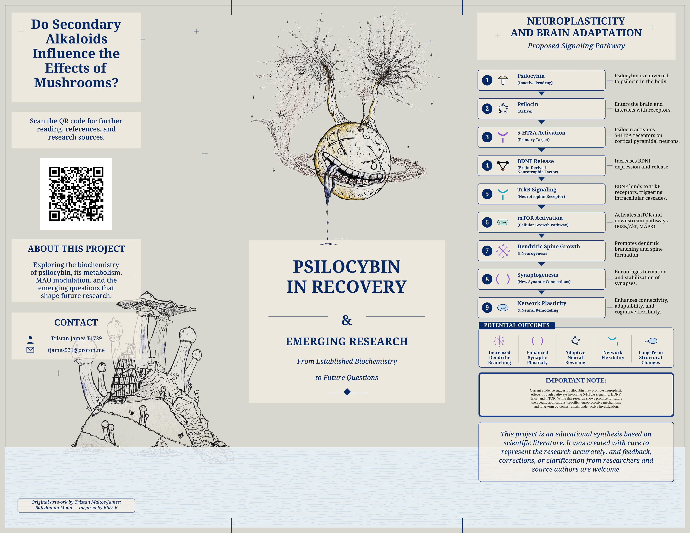

Front Side

Back Side

The images above are shown for reliable browser and mobile viewing. Use the printable PDF downloads for printing.

This printable brochure acts as a doorway to emerging research, neuroplasticity, recovery, and educational references

The images above are shown for reliable browser and mobile viewing. Use the printable PDF downloads for printing.